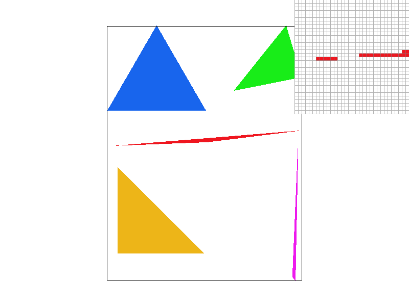
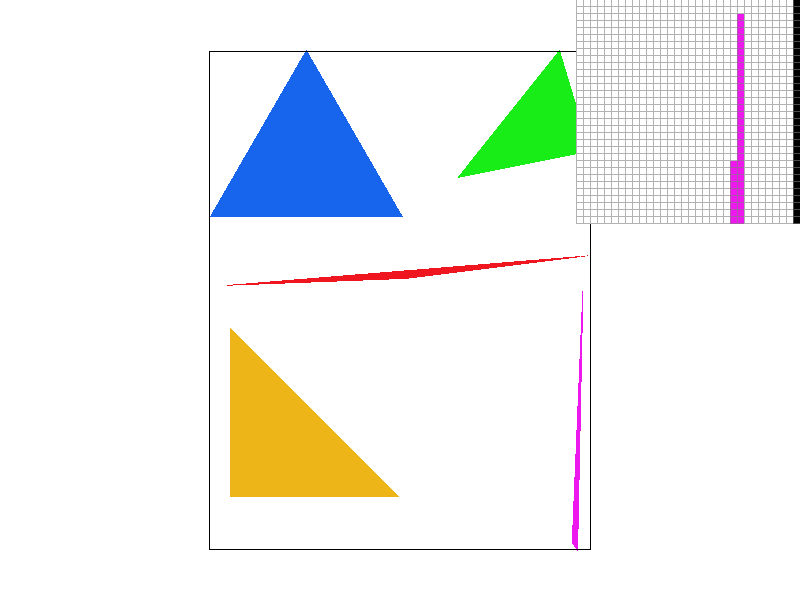
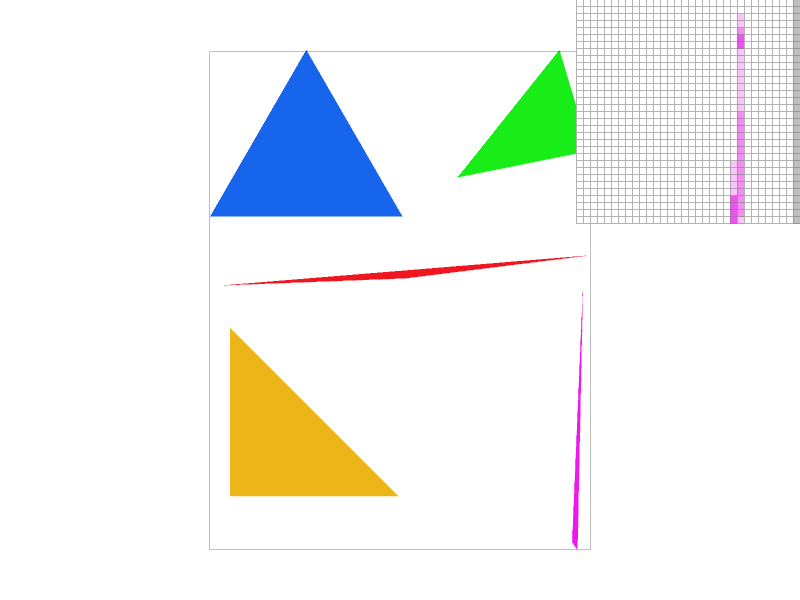
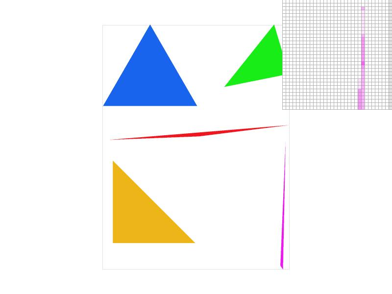
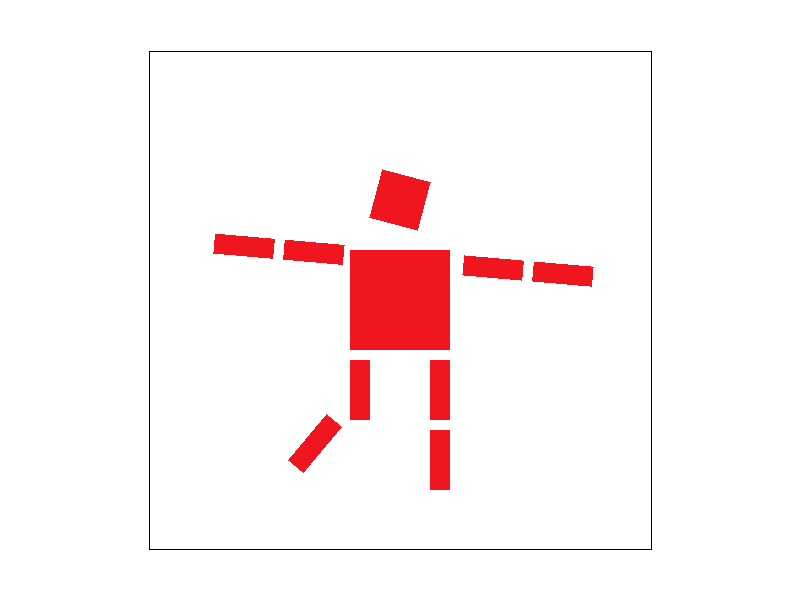
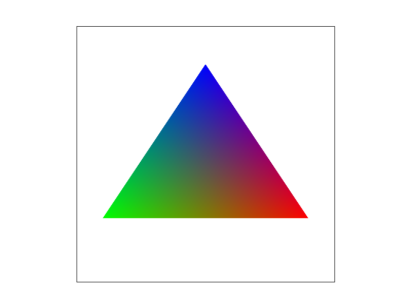
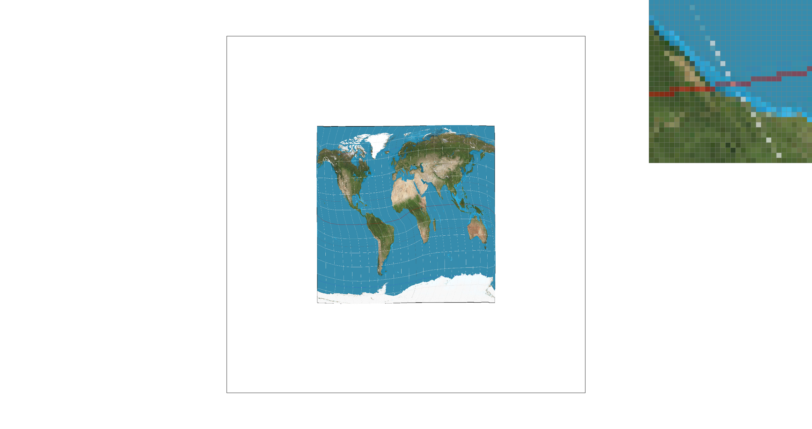
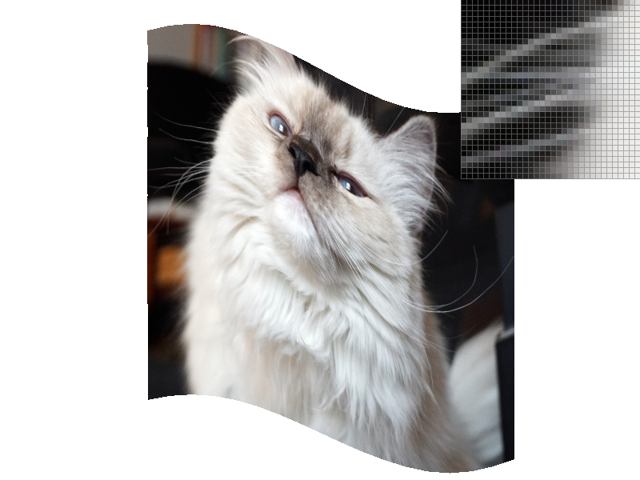
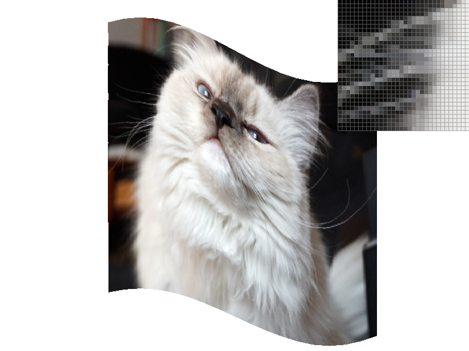

Task 1: Triangle Rasterization
Bounding Box
We first implimented the Basic Bounding Box. Given the vertices of the triangle, we first finds the minimum
and maximum x and y coordinates of the triangle. Then we iterate through the bounding box and check if the
point is inside the triangle using three line tests. If the point is inside the triangle, we color the
pixel.
We ensure that the bounding box is inside the screen by clamping the coordinates to the screen size. And we
swap the two for loops to make sure the cache is used efficiently.
Scanline
We then implemented the Scanline algorithm. We sort the vertices of the triangle by their y coordinates. We
render the triangle into 2 parts, the upper part and the lower part. For each part, we find the intersection
of the scanline with the edges of the triangle. We then fill the pixels between the intersections.
This algorithm is more efficient than the bounding box algorithm because it only needs to iterate through
the pixels that are inside the triangle. However, it is more complex and requires sorting the vertices.

Rendering Times Comparison
Debug build, repeat 10 times:
| Test Case |
Basic Bounding Box (s) |
Swap X,Y Basic Bounding Box (s) |
Scanline (s) |
| Basic 1 |
0.011928 |
0.012152 |
0.006026 |
| Basic 2 |
0.044396 |
0.04534 |
0.044267 |
| Basic 3 |
0.013392 |
0.013052 |
0.01282 |
| Basic 4 |
0.003251 |
0.0032 |
0.001767 |
| Basic 5 |
0.00134 |
0.0013 |
0.001341 |
| Basic 6 |
0.006447 |
0.006631 |
0.003268 |
| Basic 7 |
0.085573 |
0.084135 |
0.046709 |
| Basic 8 |
0.084978 |
0.085336 |
0.08602 |
The scanline algorithm is faster than the basic bounding box algorithm in most cases. However,
the basic bounding box algorithm is not getting faster when we swap the two for loops. This is might because the
data size is too small to see the difference.
Task 2: Supersampling
By rendering the scene at a higher resolution and then averaging these samples for each final pixel,
supersampling
effectively smooths out jagged lines and improves image fidelity.
The mainly used data structure in this task is the 2d
array sample_buffer.
We expand the sample_buffer width and height by the square supersampling rate. And we project the triangle
to the
super sampled space(x->x*sqr_ss_rate, y->y*sqr_ss_rate). Then we iterate through the bounding box of the
triangle and fill the sample_buffer with the color of the triangle in the same way as task 1.
After we fill the sample_buffer, we iterate through the sample_buffer and resolve the color of the pixel to
the
screen with the average color of the samples in the sample_buffer.
modified function:
- set_sample_rate: It now resizes the
sample_buffer
to width
* height * rate.
- resolve_to_framebuffer: Iterates through
the pixels
in the sqr_ss_rate * sqr_ss_rate area, calculates the average color of the samples, and applies it
to the
rgb_framebuffer_target.
- rasterize_triangle: Projects the triangle
to the
super sampled space and fills the sample_buffer with the triangle's color.



We can see that on the skinny edges of the triangle, the super sampled image is smoother than the original.
The pixels become more transparent as the supersampling rate increases. This is because the color of the
pixel is the average of the samples, for those pixels that are not fully covered by the triangle, the color
is averaged with the background color. And more likely to be transparent if it only covers a small part of
the pixel.
Task 3: Cubeman Animation
We created a robot staning on one feet. This was created by rotate the lower part of left feet. And
both arms are rotated and moved to looks like it was tring to keep its balance. Also, the head is rotated to
look down.

Task 4: Barycentric Coordinates
Barycentric coordinates offer a way to express locations within a triangle based on the triangle's vertices.
It tell us how much of each element from the corners is present at any point inside
this triangle. With barycentric interpolation, we can interpolated every point inside the
triangle with the
color of three vertices smoothly.
At any point within the triangle, the color you see is a mix of the colors at the vertices, with the mix
proportions
determined by the point's relative position to each vertex. Closer proximity to a vertex means more
influence from that
vertex's color.


Pixel Sampling
Pixel sampling is a technique used to determine the color of pixels in the scene. Every point in the scene
is cooresponing to one point in the uv space. Since the uv texture is discreate. Pixel sampling methods
determines
how we sample from the uv texture.
We first needs to determine the uv coordinates of the point, this is done by barycentric interpolation on the
uv coordinates of the vertices of the triangle. Then we turn the uv coordinates into the texture space
coordinates to sample the color from the
uv texture.
The nearest sampling simply takes the color of the nearest
pixel in the uv texture. This method is fast but can cause aliasing. The other method is bilinear sampling,
which takes the linear interpolation of the four nearest pixels in the uv texture.

The left two are nearest sampling and the right two are bilinear sampling.And the first row is the 1x sample
and the second row is the 16x sample.
We can see that the bilinear
sampling is smoother than the nearest sampling in 1x sample. The nearest sampling has more aliasing. This is
because for the thin lines in the texture, the nearest sampling can only take the color of the nearest
pixel, which can cause the aliasing since it is likely to sample a pixel isn't on the line. The bilinear
sampling can take the linear interpolation of the four
nearest pixels, which can smooth out the texture and represent the line correctly.
There is no significant
difference between the two sampling methods in 16x sample. This is because the texture is already smooth
enough with so many samples and the difference between the two sampling methods is not significant.
Task 6: Level Sampling
Level sampling, often associated with Mipmapping in the context of texture mapping, can
improve the quality of texture mapping by using different levels of detail for different
distances from the camera. This can help to reduce aliasing as it can use a lower resolution
texture for far away objects, and a higher resolution texture for close objects.
Speed
For the two pixel sampling methods, the speed of the nearest sampling is faster than the bilinear sampling
for about 15%.This is because the nearest sampling only needs to take the color of the nearest pixel, while
the bilinear
sampling needs to take the linear interpolation of the four nearest pixels.
For level sampling, L_ZERO is faster than L_NEAREST for about 10% and 20% than L_LINEAR for my
implimentation. This is because
L_NEAREST needs to round to the nearest level, while L_LINEAR needs to take the linear interpolation of the
two nearest levels.
The number of samples per pixel has a huge impact on speed. The speed is significantly reduced when the
number
of samples per pixel increases. This is because the number of samples per pixel directly affects the number
of
times we need to sample from the texture. The rendering time is almost linear to the number of samples per
pixel.
Memory Usage
Pixel sampling techniques and do not significantly differ in memory usage. Level sampling requires
additional memory for mipmaps. While the number of samples per pixel has a direct impact on memory usage,
particularly for
framebuffer storage.
Antialiasing Power
Bilinear sampling provides basic antialiasing by smoothing color transitions. L_NEAREST
and L_LINEAR level sampling can provide antialiasing by using different levels of detail. L_LINEAR works
slightly better than L_NEAREST in antialiasing in the 2D images.
While there is no antialiasing effect for the nearest sampling and L_ZERO level sampling.
The number of samples per pixel impact on antialiasing greatly. The more samples per pixel, the
smoother the texture and the better the antialiasing effect. But after 4x samples, the difference is not
significant.


Here are the pictures of my cat.The first to last are combinations of L_ZERO and P_NEAREST, L_ZERO and
P_LINEAR, L_NEAREST and P_NEAREST, as well as L_NEAREST and P_LINEAR. You can see a great difference in her
fur. L_ZERO and P_NEAREST has no antialiasing effect, while L_ZERO and P_LINEAR looks smoother. L_NEAREST
and P_NEAREST messes up the fur, and L_NEAREST and P_LINEAR looks over smooth and blurry.